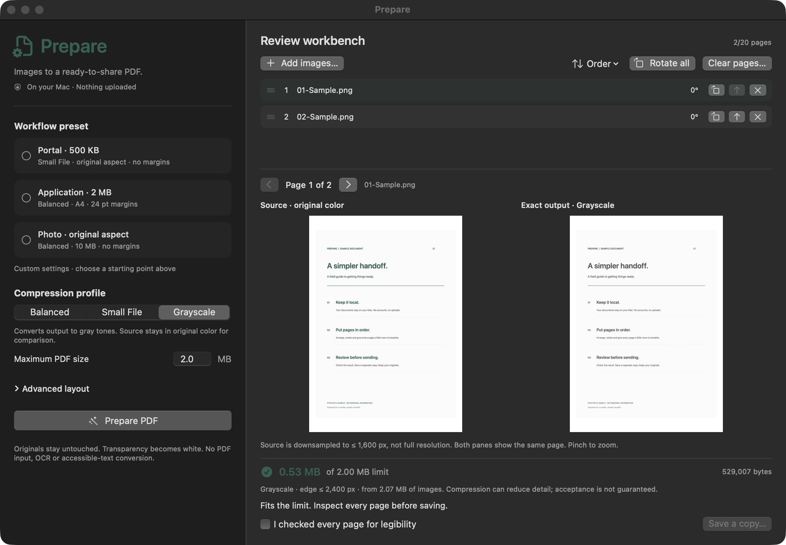

A limit, not a guess.
Set a byte budget. Prepare checks the finished PDF before offering it for export. If it cannot fit within its quality floor, it tells you.
Your application. Your deadline. Your documents.
Turn photos and scans into a smaller PDF—
without handing them to a cloud.
No account. No subscription. No document uploads.
01 / LESS FRICTION
Small enough to download without thinking twice.
Focused enough to finish the job.
Set a byte budget. Prepare checks the finished PDF before offering it for export. If it cannot fit within its quality floor, it tells you.
DPI ceilings, grayscale, paper sizes and margins. Review legibility before saving. Original images and their filenames stay untouched.
No conversion server, tracking SDK or account system. Image processing runs locally. Choose local storage, not a synced or cloud-backed folder.
02 / THE WORKBENCH
Arrange, rotate, duplicate. Then compare your source
with the result. No black box. No crossed fingers.

MacNative PDFKit result review, HEIC input and DeviceGray output.
PortableCustom 36–600 DPI, split spreads and opt-in near-white cleanup.
Clear boundariesRaster PDFs. No OCR, PDF input or password encryption in this release.
03 / TAKE IT WITH YOU
Choose your platform. No JavaScript is required to download.
SwiftUI + Apple frameworks. macOS 14 or later. No runtime to install.
Download Mac ZIP ↓SHA-256 checksumAd-hoc signed, not notarized. Expand and move to Applications. macOS may require approval in Privacy & Security. Never disable Gatekeeper globally. Intel binaries are not provided.
A tiny folder, your existing desktop browser. No EXE, bundled browser or server.
Download Portable ZIP ↓SHA-256 checksumExtract the entire ZIP; open Prepare-Portable/index.html in current Chrome, Edge or Firefox. JPEG/PNG only. Browser handles saving; use a new filename.
The same dependency-free companion. Uses your installed desktop browser, not a bundled engine.
Download Portable ZIP ↓SHA-256 checksumExtract all files and open index.html in current Chrome or Firefox. No ELF, DEB, RPM or Flatpak package is shipped. Browser prerequisite is separate.
Native Android 9+, no network permission. API 28/36 emulator checks pass. Requires your own signing—not a tap-to-install release.
Unsigned developer APK ↗24.8 KB · SHA-256 · Signing instructions. No Google Play listing or physical-device qualification claimed.
All downloads are free. Selectors only suggest a platform; they never start a download automatically. OS detection cannot determine Mac CPU architecture.
04 / SMALL BY DESIGN
100 ideas. One strict filter: does this make the handoff better without compromising privacy, reliability or download size?
The roadmap is a backlog, not a list of shipped features. Password encryption, OCR and native Windows/Linux hosts need separate engineering and security gates.
Read the 100-capability roadmap ↗No. Processing is local, with no account or analytics. The website and GitHub downloads use the internet; your conversion does not. Browser extensions, OS backups and cloud-backed file providers are outside Prepare's control.
No. Compression trades detail for size. Prepare stops at bounded quality floors rather than promising impossible results. Always review small text in the saved PDF.
The source is public and inspectable under the Hippocratic License 3.0 core. It has ethical-use restrictions, so it is not OSI-approved open source. Read the license before redistributing.
I'm Goni Sulaiman. Prepare is an independent project. Contributions are welcome; there is no corporate support desk or guaranteed response time.